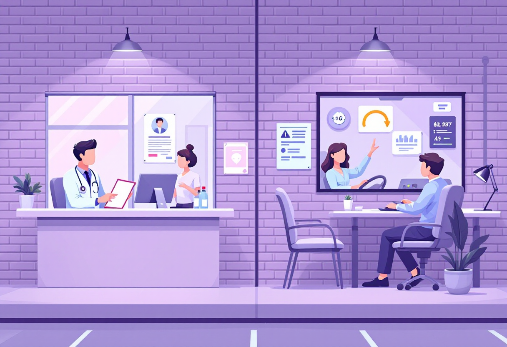
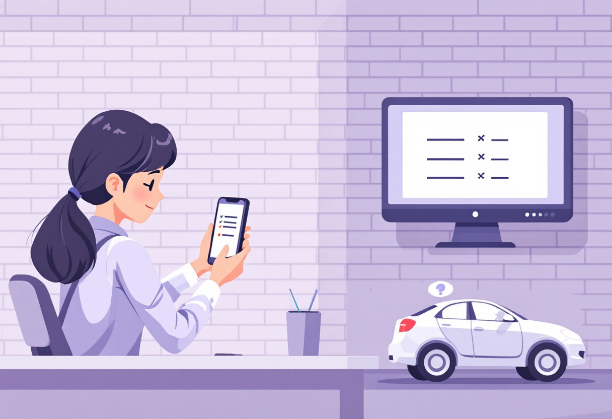
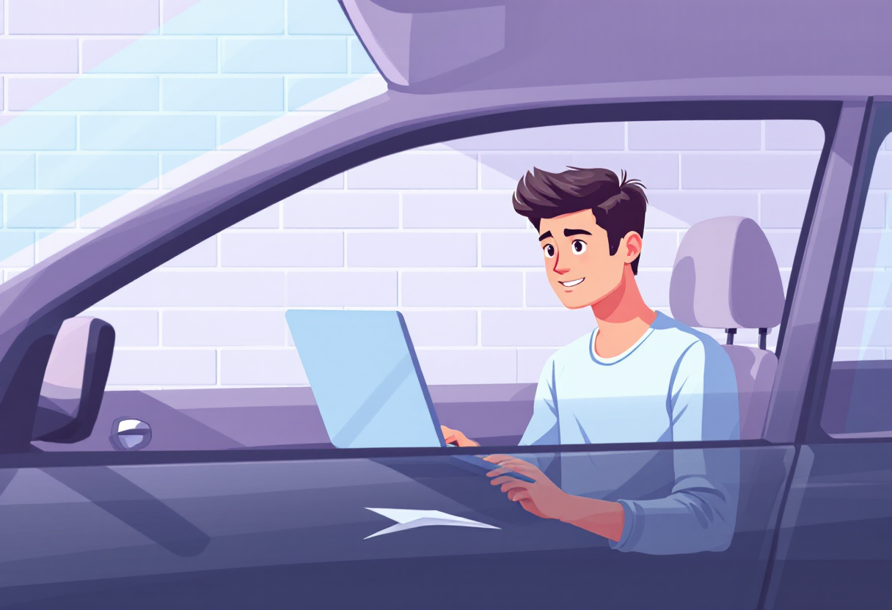

Водійське посвідчення
Як отримати посвідчення водія в Україні: етапи, документи, важливі нюанси.

Медицина (довідка 083/о)
Спочатку потрібно пройти медогляд та отримати медичну довідку встановленого зразка.
- Робиться у приватній або державній клініці.
- Потрібно: паспорт або ID-картка, ІПН.
- Діє 2–3 роки залежно від віку.

Автошкола
Навчання складається з теоретичної та практичної частин.
- Тривалість: від 2 до 3 місяців.
- Складається з лекцій та водіння з інструктором.
- Після проходження видається сертифікат.

Іспити у сервісному центрі МВС
Після автошколи складається іспит у сервісному центрі:
- Теорія — тестування на комп'ютері.
- Практика — водіння на майданчику та по місту.
- Запис на іспит — через електронну чергу.
Отримання водійського посвідчення
Після успішної здачі іспитів ви отримуєте посвідчення водія.
- Потрібні: паспорт/ID, ІПН, медична довідка, квитанція про оплату.
- Готове посвідчення видають у день складання іспиту.
- Перше посвідчення діє 2 роки.